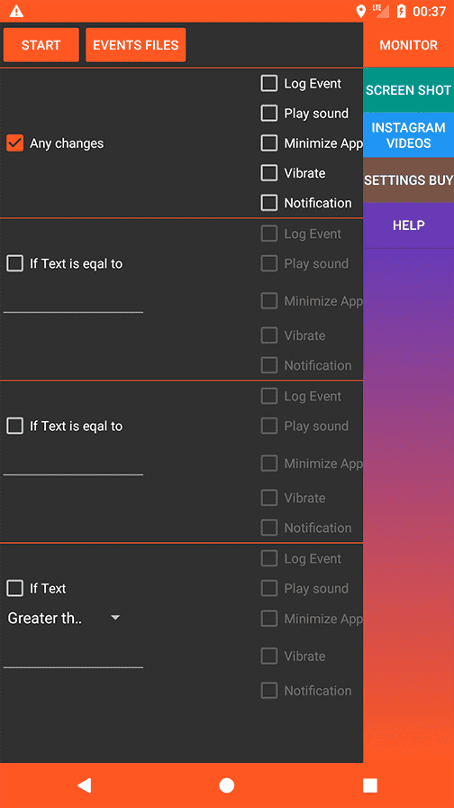
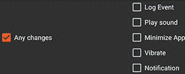
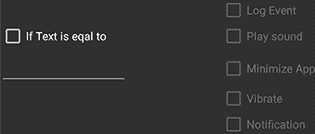
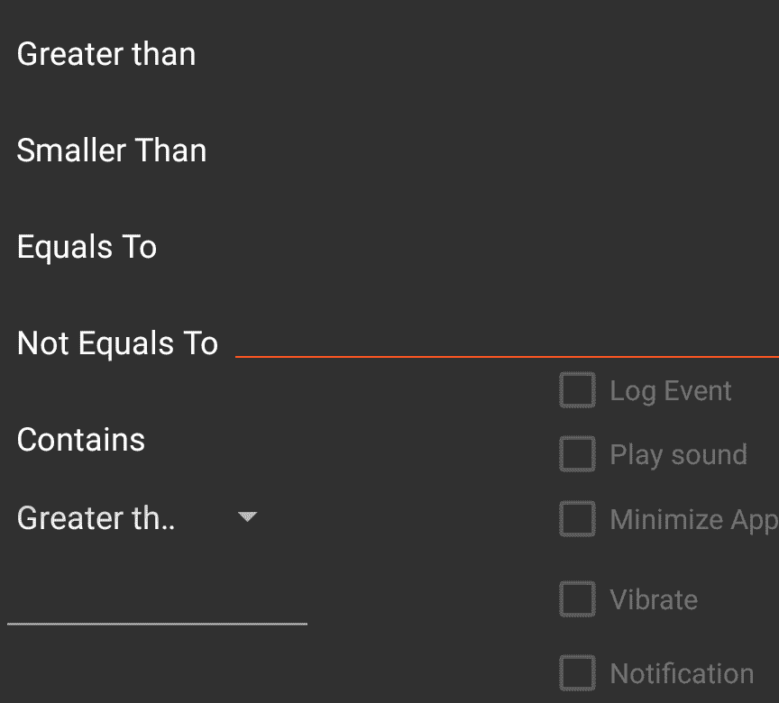
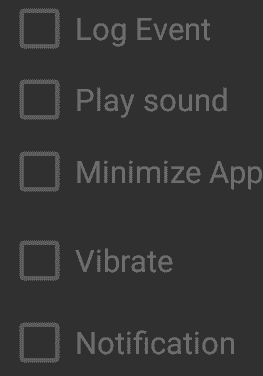
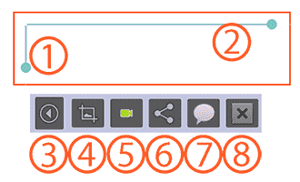
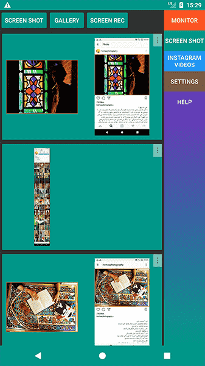
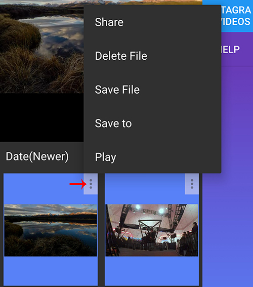
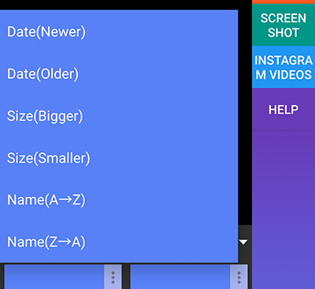
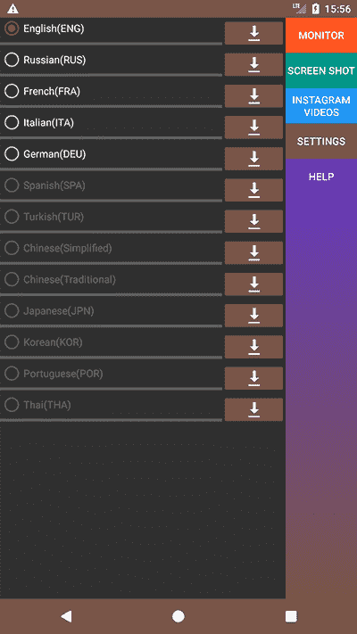

| Monitor | Screen Shot | Instagram Video | Settings | Privacy Policy |
|  |
|  |
|  |
| If the text in selected area became equal with input text the application will notify you as you like(only supported languages) |
|  |
| In this section you can select
conditions with your input text. For example if like or
comments number became larger than the input or your assets
in game changes the app notify you. |
|  |
|
After selecting change
type ,you should select events so app can
notify you Log Event: after an event is
triggered the application will create an html log file with
time and screen shot of the event Play Sound: play alarm sound Minimize
App: The monitored app
will send to back. Phone
home screen appears. This is useful
when you spy someone online activity if she
became online the app
will be closed and your status became offline. Vibrate:
Vibrate Phone if an event happened Notification:
show a notification with screen shot of the event
|
|  |
|
After pressing start button
and confirm permissions two windows will appear 1-2: change area size,
touching and dragging the empty space will move the box 3- Expand and shrink the menu
and moving the menu by hold and dragging 4- When selecting area window
is in resizing mode touch events doesn't work on below
app so after resizing if needed pressing this button
will active touching and by long press the box will
hide. 5- Start and stop monitoring
process 6- Share the content in the
area windows 7- Read the text in the box 8- Exit and launch the app
|
You can easily took screen shots. Go to this tab, press screenshot select area and take screenshots. You can also copy text in any applications like Instagram that prevent you from doing that and you can take long screen shots
|  |
|
Your screenshots goes here, touch
them to open or press more button for more options |
FAQ:
Where are
the screen shots located? In phone memory -> Monitoring Center
-> ScreenShots
Which languages are supported for
extracting texts?
The language in setting tab are supported.
More languages will added
If you watch videos in Instagram App they
will appear here, it works on any Instagram page even private. So
watch a video completely in Instagram, open app and the video is
here. Some video stories showing here too.
|  |
|
Touch more button for more |
| Sort files by Date,Size and name |  |
FAQ:
Why video backgrounds are
in blue and red?
Incomplete and cropped files are in red
background.
Why old video files removed?
The app
read Instagram cache directory for video files. They may removed by
system, Instagram App or third party Apps. So save them before they
removed.
|  |
Dowload any languages,then select the one needed for extracting texts. |
Which
languages are supported for extracting texts?
The language in this tab are supported. More languages will be added
The Website and services may contain links to other websites or Internet resources and services. We have no responsibility or liability for, or control over, those other websites or Internet resources or their collection, use and disclosure of your Personal Information. You should always read and familiarize yourself with the privacy policies of other websites to learn how they collect and use your Personal Information.
Log Data
I want to inform you that whenever you use my Service, in a case of an error in the app I collect data and information (through third party products) on your phone called Log Data. This Log Data may include information such as your device Internet Protocol (IP) address, device name, operating system version, the configuration of the app when utilizing my Service, the time and date of your use of the Service, and other statistics.
Cookies
Cookies are files with small amount of data that is commonly used an anonymous unique identifier. These are sent to your browser from the website that you visit and are stored on your device internal memory.
This Service does not use these cookies explicitly. However, the app may use third party code and libraries that use cookies to collection information and to improve their services.
Service Providers
I may employ third-party companies and individuals due to the following reasons:
I want to inform users of this Service that these third parties have access to your Personal Information. The reason is to perform the tasks assigned to them on our behalf. However, they are obligated not to disclose or use the information for any other purpose.
Security
I value your trust in providing us your Personal Information, thus we are striving to use commercially acceptable means of protecting it. But remember that no method of transmission over the internet, or method of electronic storage is 100% secure and reliable, and I cannot guarantee its absolute security.
Links to Other Sites
This Service may contain links to other sites. If you click on a third-party link, you will be directed to that site. Note that these external sites are not operated by me. Therefore, I strongly advise you to review the Privacy Policy of these websites. I have no control over and assume no responsibility for the content, privacy policies, or practices of any third-party sites or services.
Changes to This Privacy Policy
I may update our Privacy Policy from time to time. Thus, you are advised to review this page periodically for any changes. These changes are effective immediately after they are posted on this page.